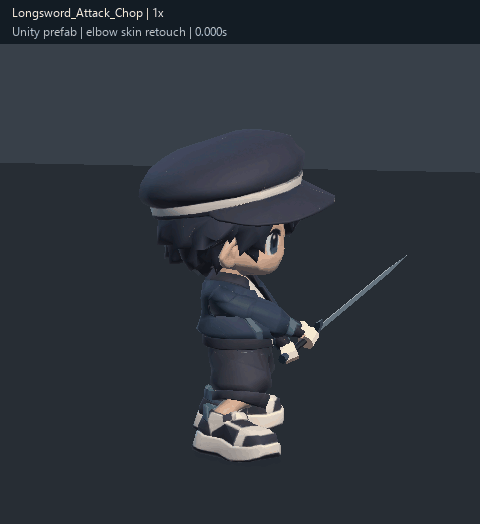
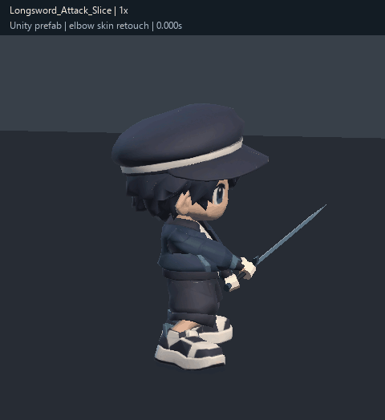
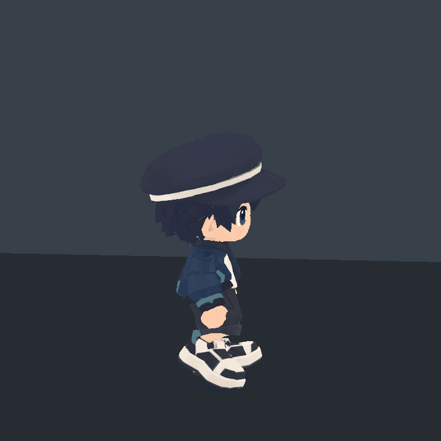
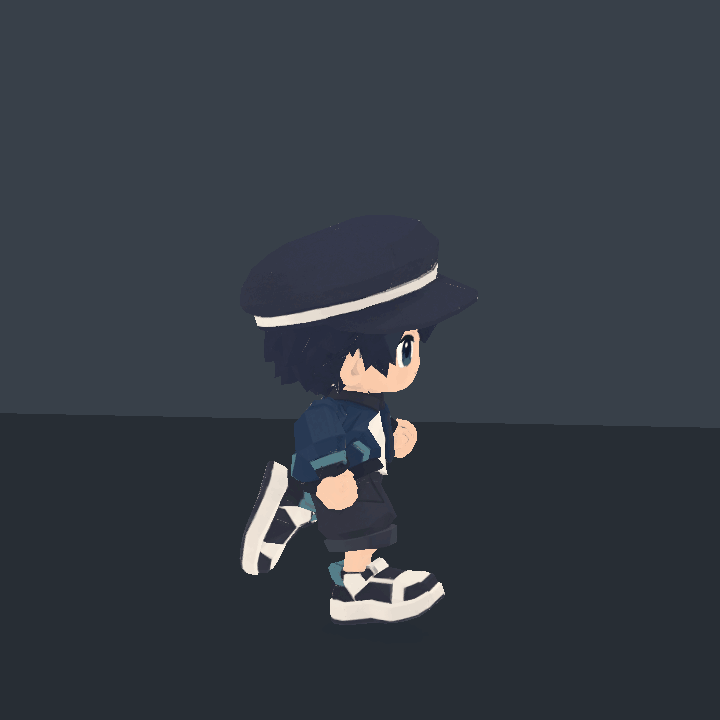
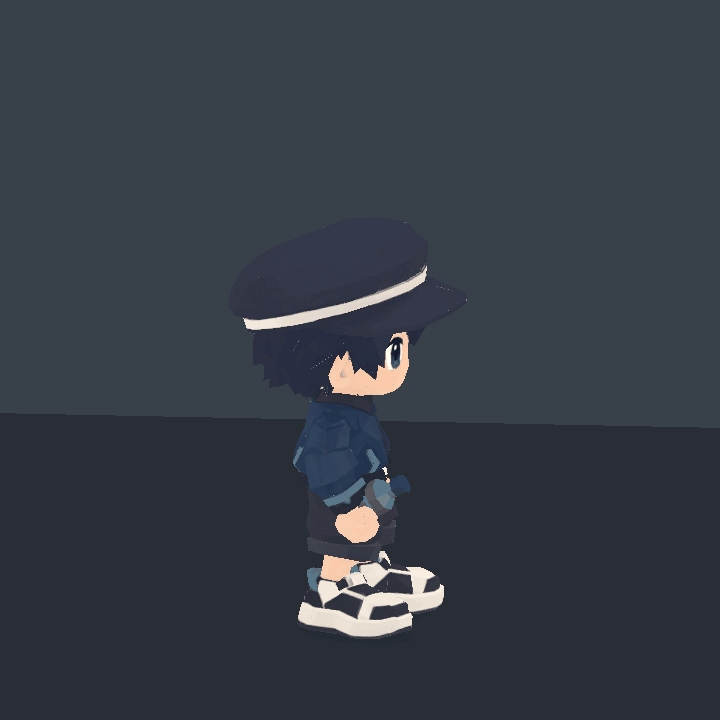
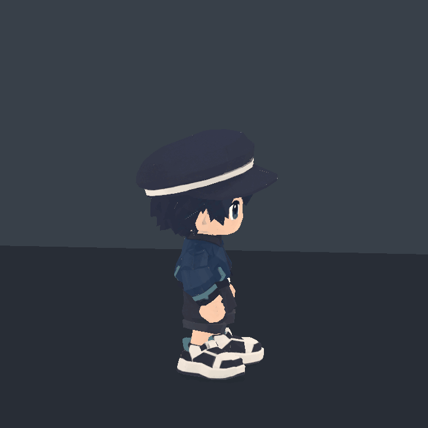
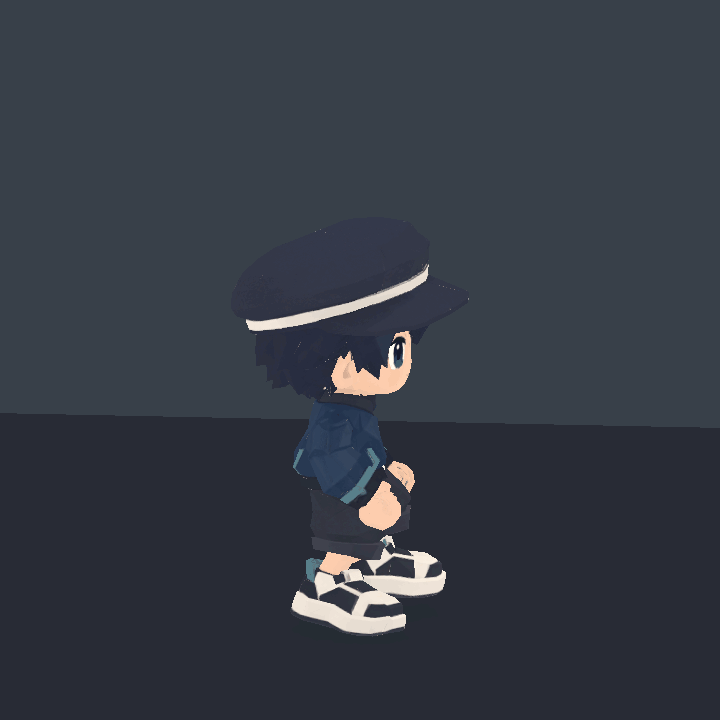
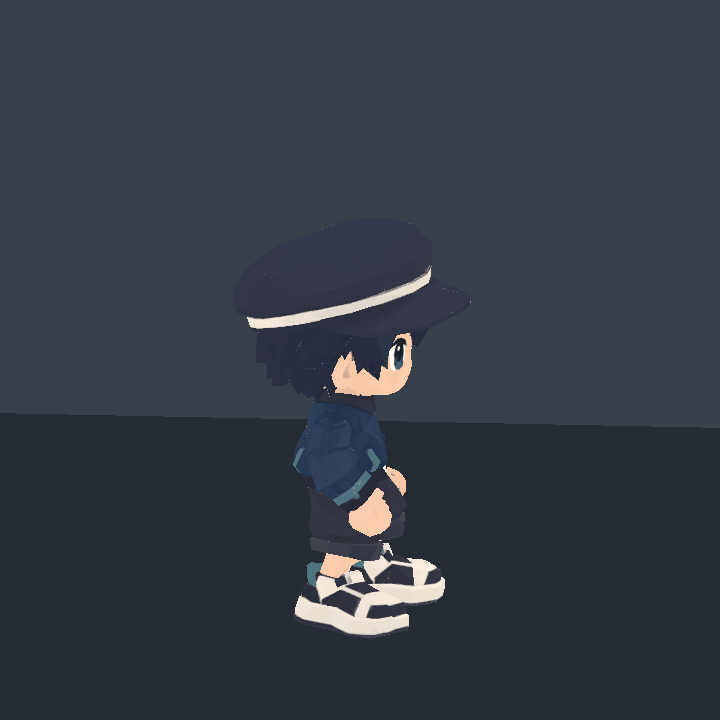
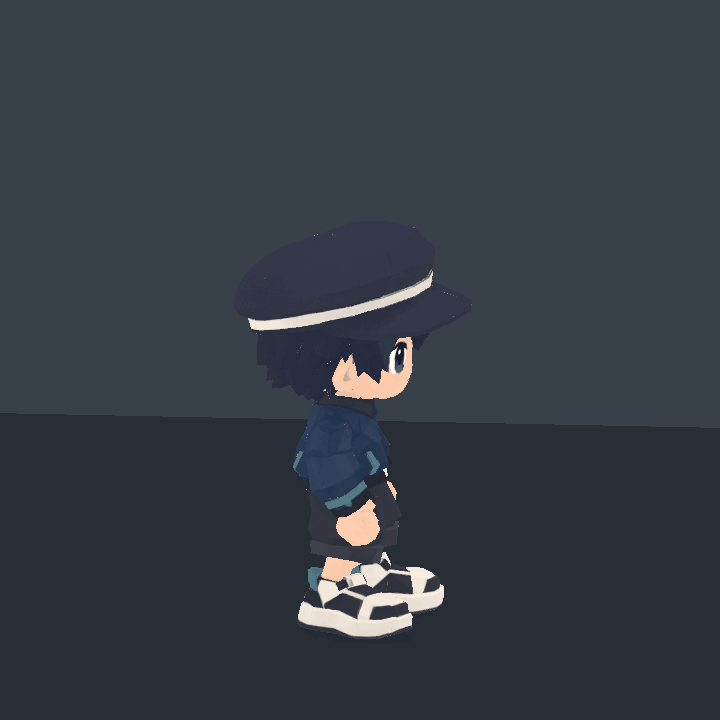

주인공 · 최종 사용 모션
검 공격 3종 + 기존 v007 비공격 15종. 2026년 10월 27일 전체 검수 및 공격 모델의 팔꿈치 스킨 보정.
공격 타이밍과 관절 움직임은 유지하고, 팔꿈치 주변 소매의 과도한 접힘을 국소적으로 완화했습니다. 기존 모션은 24본 리그, 검 공격은 23본 리그의 전용 프리팹에 대응합니다. 두 세트는 같은 Animator에 바로 혼용할 수 없으며, 한 캐릭터로 연결하려면 별도 리타기팅 작업이 필요합니다.
내려베기

Longsword_Attack_Chop
최신 검 공격 · 전용 23본 리그가로베기

Longsword_Attack_Slice
최신 검 공격 · 전용 23본 리그찌르기
Longsword_Attack_Stab
최신 검 공격 · 전용 23본 리그대기

Idle_Fists
기존 v007 승인본 · 24본 리그걷기

Walk_Fists
기존 v007 승인본 · 24본 리그달리기

Run_Fists
기존 v007 승인본 · 24본 리그점프

Jump_Full
기존 v007 승인본 · 24본 리그대시
Dash_Forward
기존 v007 승인본 · 24본 리그포션 섭취

Potion_Drink
기존 v007 승인본 · 24본 리그투척
Item_Throw_Overhand
기존 v007 승인본 · 24본 리그피격

Hit_Reaction
기존 v007 승인본 · 24본 리그상호작용
Interact_Reach
기존 v007 승인본 · 24본 리그줍기

Pickup_Low
기존 v007 승인본 · 24본 리그도약

Jump_Takeoff
기존 v007 승인본 · 24본 리그상승

Jump_Rise_Loop
기존 v007 승인본 · 24본 리그정점

Jump_Apex_Loop
기존 v007 승인본 · 24본 리그낙하

Jump_Fall_Loop
기존 v007 승인본 · 24본 리그착지

Jump_Land
기존 v007 승인본 · 24본 리그